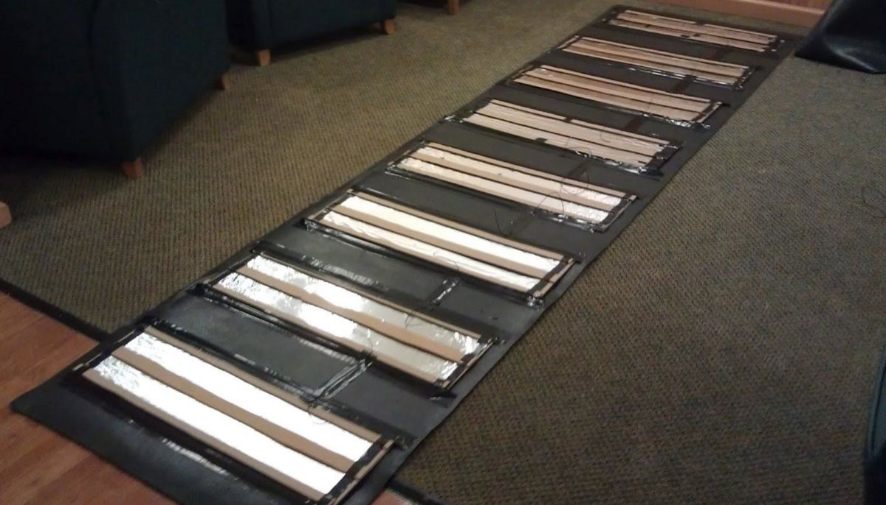
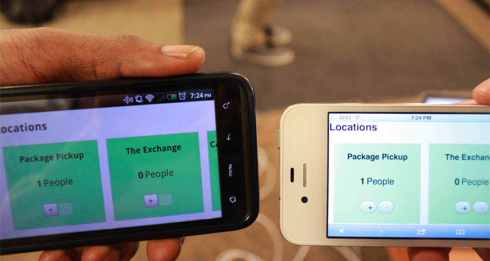
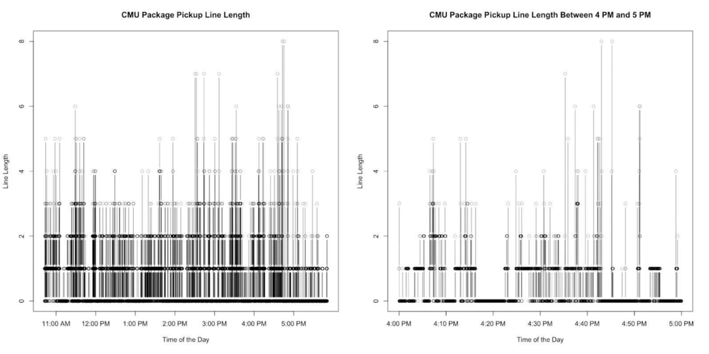
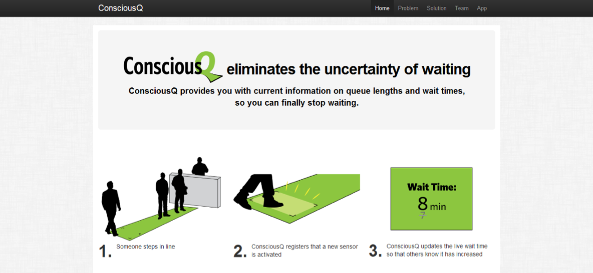

Designed and built Conscious Q, a platform that provides users with current information on queue lengths and wait times.
Dates: December 2011 - May 2012
Team: Scott Dombkowski, Michael Wang, Christian Reyes, and John Bender
ConsciousQ was created to provide users with current information on queue lengths and wait times. The platform was my junior year Information Systems project and my team included three fellow Information Systems majors. We were given flexibility to determine our problem space by the Information Systems faculty. With this flexibility we decided to explore a problem that we all experienced while on campus: queues. Utilizing our knowledge and experience in software development, data analysis, and hardware development, our team created a basic web application that allowed a user to see the length of a queue and the projected wait time if someone were to enter the queue at a specific time. The application was powered by a rug we constructed to keep track of how many people were in line at once and the amount of time each of those people were in line for.
We had the resources to build one rug which was limited in length. From time to time the line could be longer than the rug, limiting our ability to track everyone’s complete time in line. We worked with Package Pickup and Skibo Cafe, both popular campus locations, to test ConsciousQ and get real data from the public. During our test, a student with only 10 minutes between classes could use our application to determine if they could pick up a quick lunch or a package before heading to their next class. Despite the limitations of our proof of concept, we were able to create a platform that automatically updated with real-time information and provided numerous insights and hard data that our test sites had no access to before our trial.
Responsibilities
- Created the ConsciousQ landing page.
- Inquired and worked with a number of locations on the CMU campus to test ConsciousQ.
- Worked with my team to create our proof of concept floor rug.
- Led the project in a project management role. This included constructing weekly status reports and tracking our development efforts.
- Analyzed the data from our own personal tests and public tests. The results of the analysis were used to improve our proof of concept and wait time algorithm, in addition to providing novel insights for the places of businesses that participated in our public tests.
Conscious Q Deployed at Package Pickup

Inner Workings of Conscious Q Floor Rug

Early Version of Conscious Q Web Application

Data Collected at Package Pickup During Trial

Conscious Q Landing Page